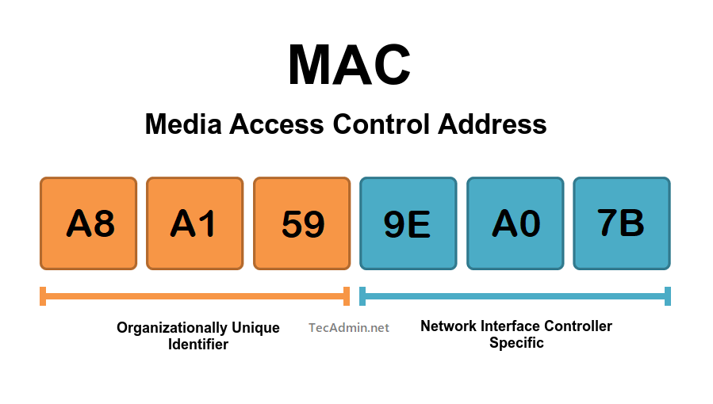

Bypass MAC Limitations For Unlimited Free WiFi on Planes
On most airlines today, you are given “free” WiFi during your flight. In reality, this looks more like “20 minutes for free, then $30 for the rest of the flight.” Although the airlines occasionally offer a basic streaming service for free, the movie selection is usually abysmal and can be very laggy and unreliable during playback.
Although I don’t travel by plane frequently, usually it is for very long trips. I immediately decided that there had to be something that could be done to bypass this system. Long story short, it works, and I’m writing this from 30,000 feet!
For those who are not aware, simply refreshing the page or trying to get another 20 minutes from the captive portal doesn’t work. This is because the backend server is aware of the device and knows if you have already requested for 20 minutes of free service. However, if you grab another device (latop, tablet, etc.) and try again, it will grant you another 20 minutes.

Learn more about MAC addresses here
So, the real question is how do they know if I have already requested for WiFi?
How do they know me??
And the answer isn’t particularly straightforward. In today’s world, tracking is baked into almost every application, website, and service imaginable. However, for “less-sophisticated” services like airline WiFi, things are usually limited to one or more of the following methods of identification.
- They monitor your MAC address (physical card address) to distinguish different devices and people.
- They track browser user-agents and digital fingerprints (screen dimensions, browser behavior, etc.)
- They set a cookie on your device after using the 20 minutes of service the first time.
Obviously, the system applied varies between every airline and system behind it.
Bypassing the limitation
Although it is hard to know the system applied, there are a few tricks you can try to get around their limit of free WiFi to get yourself unlimited WiFi throughout your entire flight.
Likely, they are seeing that your device has the same MAC address. No matter what you do (VPN, new browser, clearing history) they will still be able to easily identify you.
Most phones (and computers) support dynamic MAC addresses that change by themselves to help preserve your anonymity and make you harder to track (especially on public networks). I tried this on my phone, however it didn’t do the trick. I’m not sure if it’s enough to mask the hardware address. The same thing happened on my Ubuntu laptop.
On my laptop, I installed a nice piece of software called macchanger which makes changing your MAC address super duper easy with a single command.
I first connected to the WiFi the first time (for free, like normal) and installed this tool with the following command:
sudo apt update
sudo apt upgrade -y
sudo apt install macchanger
After letting things finish, I checked ut the help page for it.
GNU MAC Changer
Usage: macchanger [options] device
-h, --help Print this help
-V, --version Print version and exit
-s, --show Print the MAC address and exit
-e, --ending Don't change the vendor bytes
-a, --another Set random vendor MAC of the same kind
-A Set random vendor MAC of any kind
-p, --permanent Reset to original, permanent hardware MAC
-r, --random Set fully random MAC
-l, --list[=keyword] Print known vendors
-b, --bia Pretend to be a burned-in-address
-m, --mac=XX:XX:XX:XX:XX:XX
--mac XX:XX:XX:XX:XX:XX Set the MAC XX:XX:XX:XX:XX:XX
Report bugs to https://github.com/alobbs/macchanger/issues
I then checked the name of my WiFi card on my laptop with
sudo ip link show
Usually, you will see something like wlan0 or eth0 but in my case, the device was named wlp1s0
With this, you can now change your MAC address (replace wlp1s0 with your address):
sudo macchanger -r wlp1s0
which will grant you a brand new, randomized MAC!
If it yields some error, try disabling your WiFi card before running macchanger (replace wlp1s0 with your address)
sudo ip link set wlp1s0 down
sudo macchanger -r wlp1s0
sudo ip link set wlp1s0 up
Now, connect back to the WiFi network (aainflight.com on American Airlines for me) and try to get another 20 minutes of WiFi. Chances are, the server will see you as a new device and grant you more time! Run the macchanger command shown above every time you run out of internet and you’re good to go.
To make this a bit easier, I made the following shell file to automate everything:
#!/bin/bash
echo "\n [OK] Stopping WIFI (wlp1s0) network..."
sudo ip link set wlp1s0 down
echo " [OK] Changing MAC address..."
sudo macchanger -r wlp1s0
echo " [OK] Starting WIFI (wlp1s0) back up..."
sudo ip link set wlp1s0 up
Put this into a file ending in .sh and then run the following to make it executable.
chmod +x <your_shell_file>.sh
Now, you can run:
./mac-change.sh
(Replace with your file)
I found that this worked very reliably on both my flights on American Airlines, however if you are still encountering issues on your airline, try changing your browser setup additionally.
To do this, open up your browser and press CTRL+SHIFT+I to open up the developer tools. You can try one or more of the following to see if a combination works for you:
- Change device dimensions (top bar on Firefox)
- Choose preset to spoof device (top bar on Firefox)
- Change the User Agent to that of another computer or phone
Additionally, I would recommend doing all this in another profile (Chrome, Firefox, Etc.) from your main profile to make it look even more varied, or clear all of the history and cookies in your existing profile. This will help to fool the server to make it think its seeing a new device.
Hopefully these solutions prevent you from paying a fortune next time you try to get internet on your flight!
If you have questions or comments, leave them below and I’ll try to help out ASAP!
[End Post]
0
Views